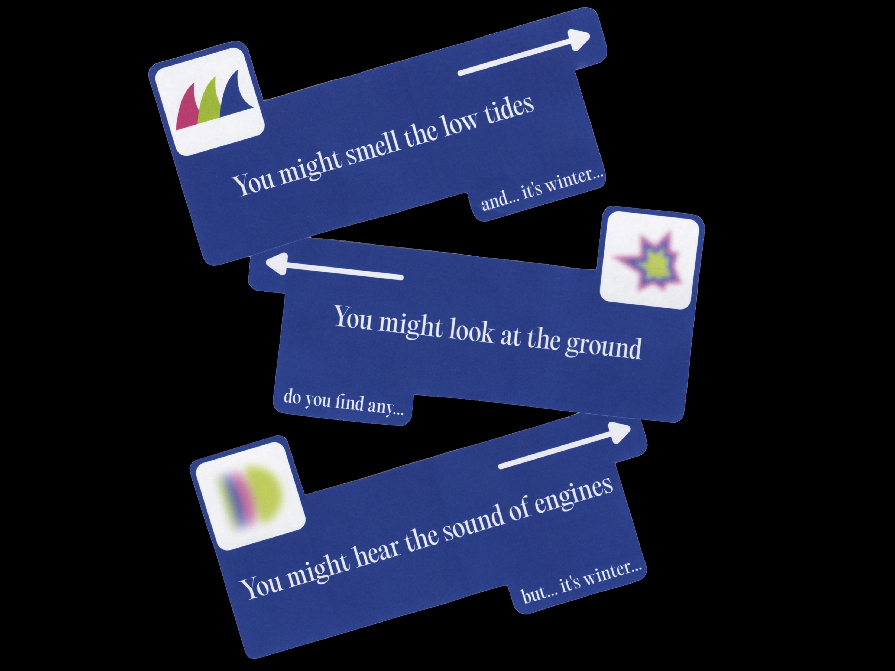
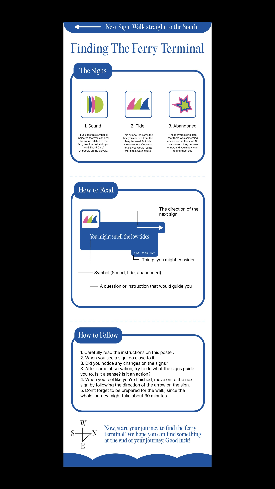
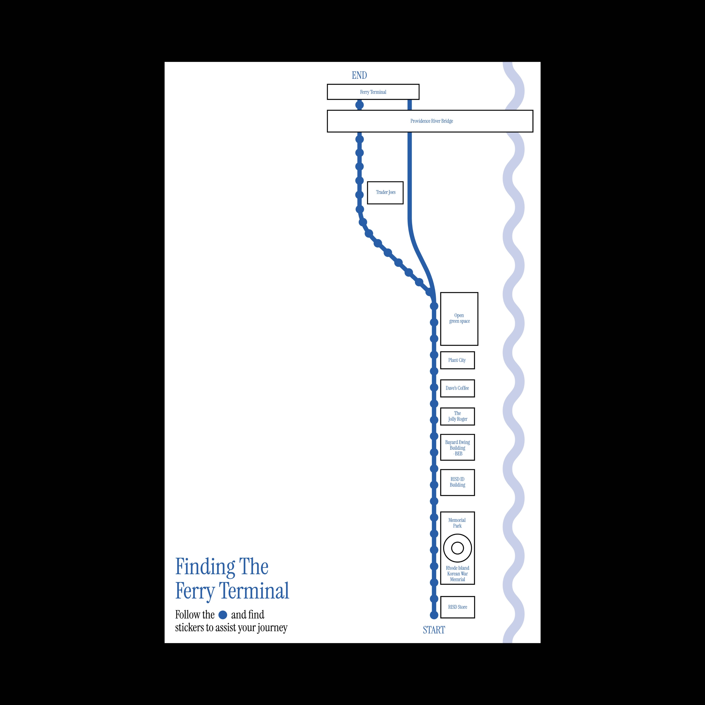
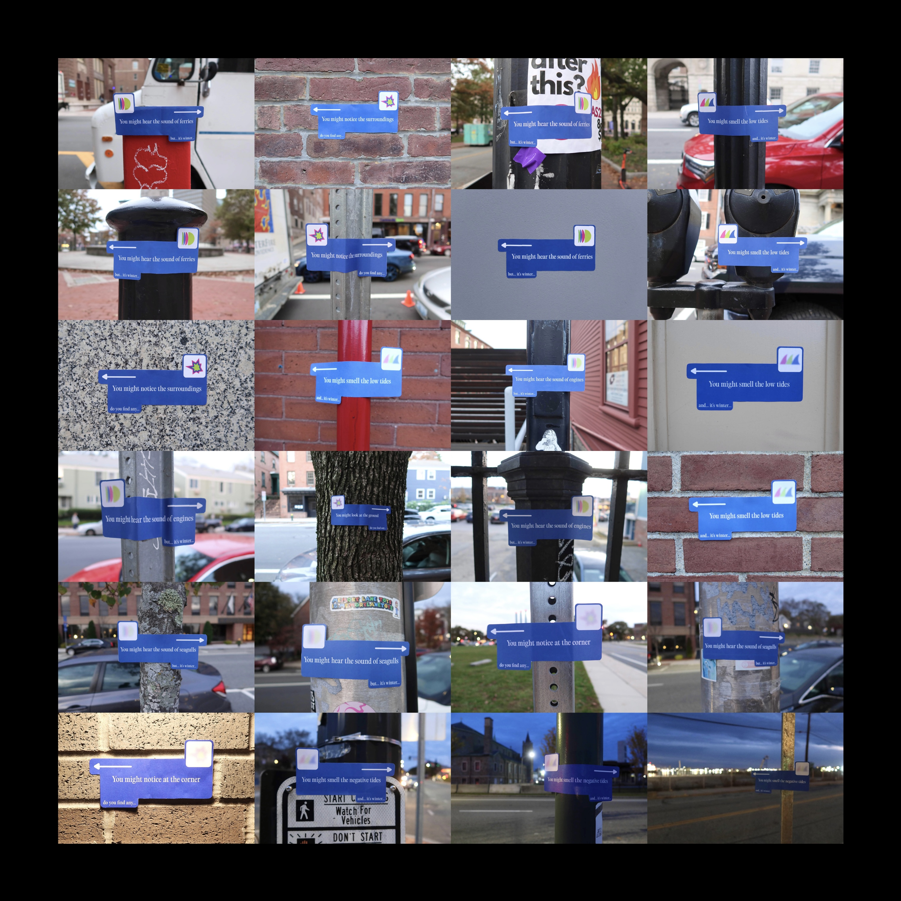
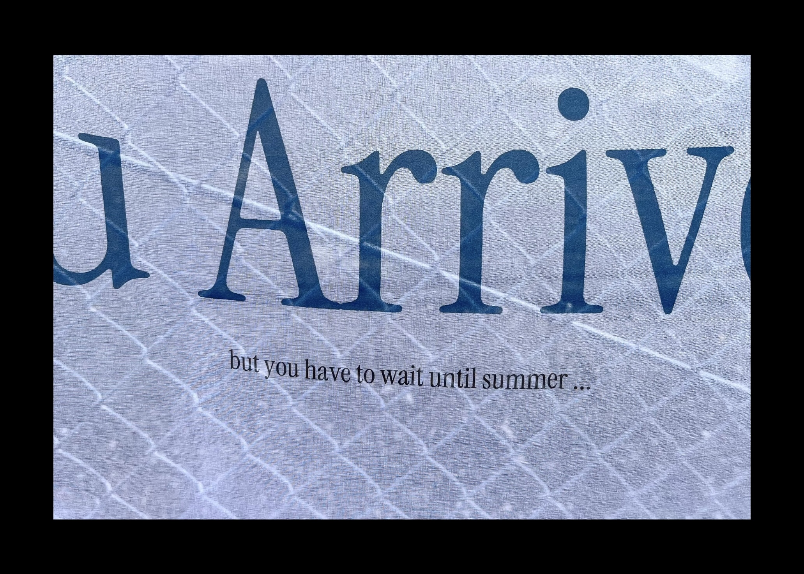
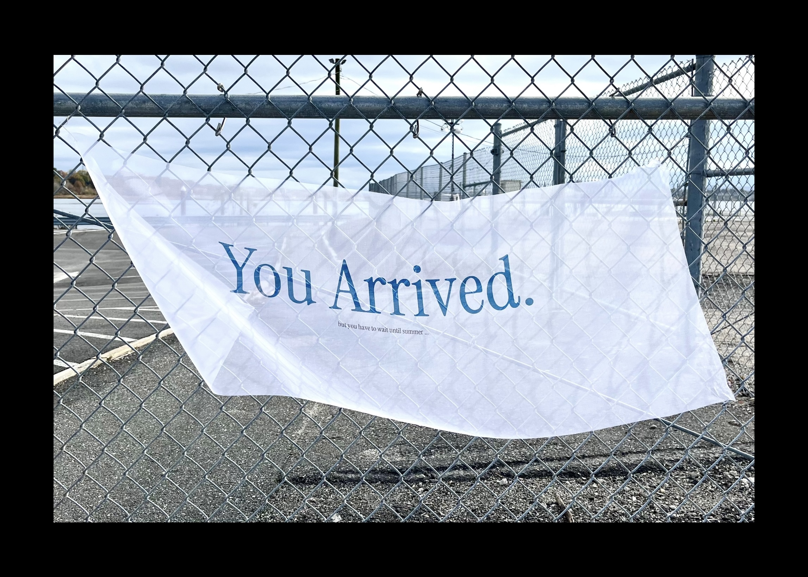

A Collective Project focusing on the site of Seasonal Ferry Terminal in Providence. Upon arriving at this physical location, one immediately notices the sparse presence of people. However there was still human evidence of abandoned objects on the floor and the sound of the highway at the same time. The Seasonal Ferry Terminal itself is no longer present, but the tides continue to flow. This is a Wayfinding to bring the presence to absence. The use of stickers with phrases containing the word "might" were designed to create the curiosity of those who follow the signs. As it got closer to the Ferry Terminal, the icons on the signs turned more blurry. Leading the audience into a mystery of “nothing” in the season of quiet winter.





